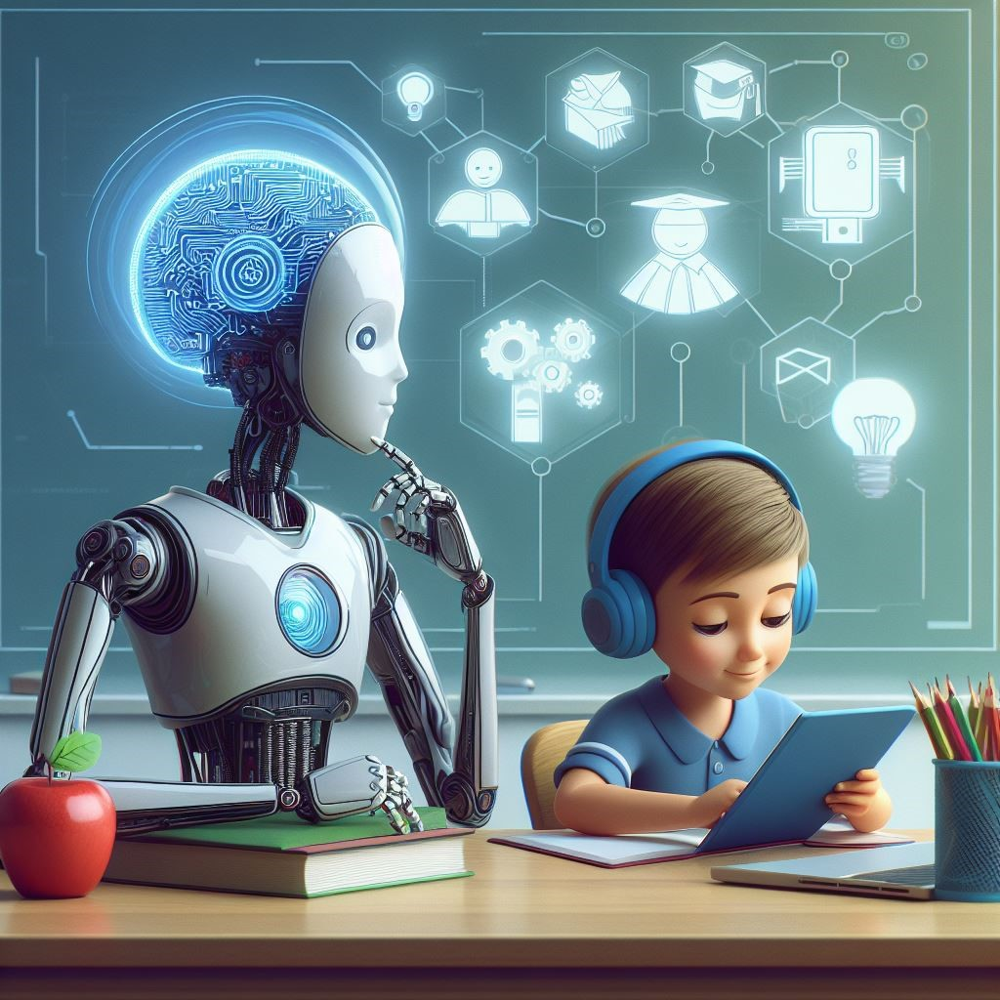

informe de la tecnologia y educación
Estado actual en México
El informe "Estado actual de las tecnologías educativas en las Instituciones de Educación Superior en México: estudio 2024", presentado por MetaRed TIC México y ANUIES-TIC, revela que hay avances significativos en infraestructura tecnológica, pero existe desigualdad entre instituciones. Se identifica una necesidad urgente de fortalecer la formación docente en competencias digitales. Los recursos educativos abiertos están en crecimiento, pero requieren mayor inversión. La educación a distancia ha experimentado una implementación acelerada después de la pandemia. El estudio destaca la necesidad de políticas institucionales que impulsen la transformación digital y aseguren la calidad en el proceso de enseñanza-aprendizaje.
Perspectiva global (UNESCO - Informe GEM 2023)
La tecnología aparece en 6 de 10 metas del Objetivo de Desarrollo Sostenible 4 sobre educación. La tecnología impacta a través de cinco canales principales: como insumo, como medio de entrega, como habilidad, como herramienta de planificación y provisión de contexto social y cultural. Tres condiciones esenciales son necesarias para maximizar el potencial de la tecnología en educación. Primero, el acceso a la tecnología con infraestructura y conectividad equitativa. Segundo, la regulación de gobernanza con políticas claras y apropiadas. Tercero, la preparación docente mediante formación en competencias digitales
América Latina y el Caribe
Según el informe del BID de 2021, la tecnología educativa tiene potencial como motor de transformación, pero el desafío es enorme debido a las desigualdades estructurales. Se necesita mapear el mercado EdTech y exponer innovaciones. Las recomendaciones están dirigidas a formuladores de políticas, líderes educativos e inversionistas.